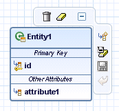
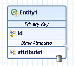

You can perform the following operations on a particular entity graphical model:
Rename entities
In terms of source code, this operation changes the name attribute of the @Entity annotation only.
Add, rename, or remove attributes
|
Note: The Eclipse IDE automatically generates getter and setter methods for new attributes. The default data type for new attributes is java.lang.String . In terms of source code, renaming attributes changes the field names of entities, together with the fields' getter and setter methods. Removing attributes removes them from the data model also. |
Collapse or expand entities or attribute groups
Save or discard your changes, as also remove the entity from the diagram without removing it from the application data model
Remove the entity from the diagram and delete it from the application data model
To perform the actions described above, follow the steps:
Position the mouse cursor over the entity you want to manage.
A button bar appears by the entity.

Choose the relevant pushbutton. Each button has an informative tooltip that describes the relevant operation.
To rename an entity or an attribute, double-click the title of an entity or the attribute, change the name, and press ENTER .
To remove an attribute, click the attribute and press DELETE or choose Delete from the context menu.
You can also remove an attribute by positioning the mouse cursor over the attribute and choosing the Delete Attribute pushbutton.

|
Note: All operations can be performed on embeddable, as well mapped superclass graphical models. |